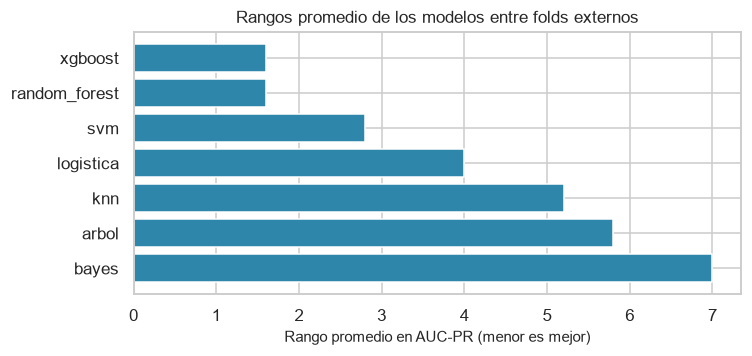
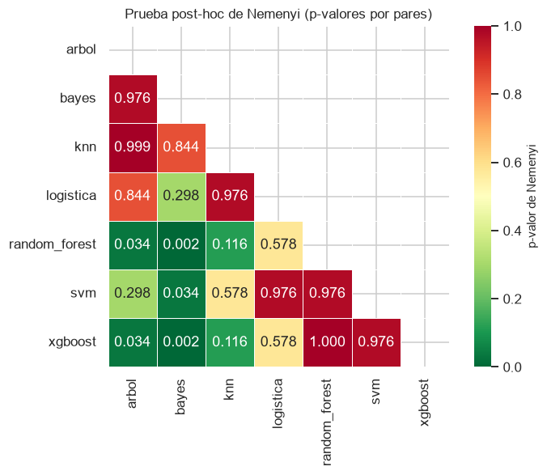
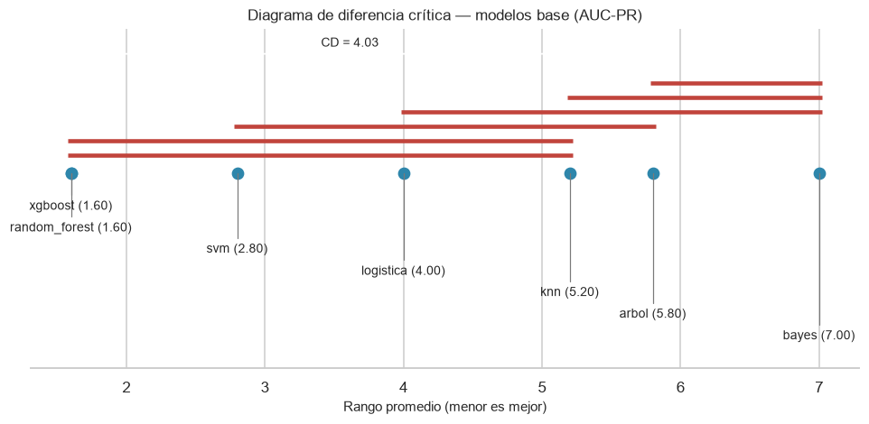
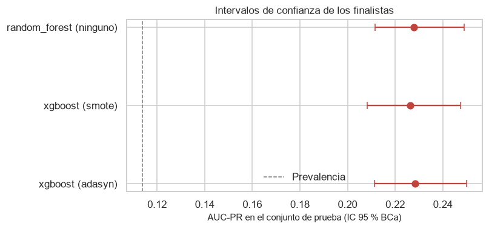

11. Comparación estadística de los modelos#
11.1. El problema de escala#
El diseño del experimento contempla 112 combinaciones, de las cuales 108 son ejecutables: las cuatro de k-NN con class_weight no tienen equivalente y quedan documentadas como inviables en la sección 8.1.1. El número de comparaciones por pares posibles entre esas 108 es 108 × 107 / 2 = 5,778. Ejecutar esa cantidad de pruebas con un nivel de significancia de 0.05 y sin ningún control produciría alrededor de 289 resultados significativos solo por azar.
Por eso la comparación no puede reducirse a aplicar pruebas por pares. Se sigue la secuencia jerárquica que exige la guía:
Prueba ómnibus (Friedman) sobre los rangos de los modelos en los folds del bucle externo. Si no rechaza, no hay evidencia de que ningún modelo supere a los demás y el análisis se detiene.
Post-hoc (Nemenyi) y diagrama de diferencia crítica, que compara todos contra todos controlando el error familiar de forma conjunta.
Comparaciones dirigidas (DeLong) entre un subconjunto reducido y justificado de modelos, con corrección de Holm-Bonferroni.
Tamaño del efecto (delta de Cliff) en todos los casos, favorables o no.
Intervalos de confianza por bootstrap BCa para las métricas principales.
from config import *
maestra = pd.read_csv(RESULTADOS / "tabla_maestra_clasificacion.csv")
completadas = maestra.query("estado == 'completada'").copy()
completadas["configuracion"] = (completadas["modelo"] + " | "
+ completadas["balanceo"] + " | "
+ completadas["optimizador"])
# Matriz de métricas por fold: filas = folds externos, columnas = modelos.
# Es la estructura que requieren Friedman y Nemenyi, que tratan los folds
# como bloques de medidas repetidas.
por_fold = pd.DataFrame({
fila["configuracion"]: json.loads(fila["auc_pr_por_fold"])
for _, fila in completadas.iterrows()
})
por_fold.index = [f"fold {i}" for i in range(1, len(por_fold) + 1)]
print(f"Configuraciones comparadas: {por_fold.shape[1]}")
print(f"Bloques (folds externos) : {por_fold.shape[0]}")
print(f"Comparaciones por pares posibles: "
f"{por_fold.shape[1] * (por_fold.shape[1] - 1) // 2:,}")
Configuraciones comparadas: 108
Bloques (folds externos) : 5
Comparaciones por pares posibles: 5,778
11.2. Etapa 1: prueba ómnibus de Friedman#
La prueba de Friedman es el análogo no paramétrico del ANOVA de medidas repetidas. Convierte las métricas en rangos dentro de cada fold y contrasta la hipótesis nula de que los rangos promedio son iguales entre modelos. Es la prueba apropiada aquí por dos razones: no supone normalidad de las métricas, y trata cada fold como un bloque, lo que reconoce que las mediciones de todos los modelos en un mismo fold están correlacionadas por compartir los mismos datos.
Se aplica sobre los siete modelos base, representado cada uno por su mejor configuración, que es la comparación de interés principal.
Esa representación tiene un costo que conviene declarar. El representante de cada modelo se elige tomando el máximo de AUC-PR entre sus dieciséis configuraciones (doce en k-NN), y después esos mismos valores por fold sirven de bloques para la prueba: es inferencia posterior a una selección. El estadístico de Friedman y los p-valores de Nemenyi que siguen son por tanto anticonservadores, porque parte de la diferencia que detectan proviene de haber elegido el máximo. La dispersión interna de cada modelo entre sus propias configuraciones (entre 0.011 y 0.032 de AUC-PR) es de hecho mayor que las diferencias que la prueba declara, así que los resultados de esta sección se leen como indicativos y no como una medida calibrada del error de tipo I.
mejores_por_modelo = (completadas.loc[
completadas.groupby("modelo")["auc_pr_media"].idxmax()])
por_fold_modelos = pd.DataFrame({
fila["modelo"]: json.loads(fila["auc_pr_por_fold"])
for _, fila in mejores_por_modelo.iterrows()
})
estadistico, p_valor = stats.friedmanchisquare(
*[por_fold_modelos[c] for c in por_fold_modelos.columns])
friedman = pd.DataFrame([{
"comparación": "7 modelos base (mejor configuración de cada uno)",
"k (modelos)": por_fold_modelos.shape[1],
"n (folds)": por_fold_modelos.shape[0],
"chi² de Friedman": estadistico,
"grados de libertad": por_fold_modelos.shape[1] - 1,
"p-valor": p_valor,
"conclusión": ("Se rechaza H0: hay diferencias" if p_valor < 0.05
else "No se rechaza H0"),
}])
guardar_resultado(friedman, "friedman_modelos")
friedman.round(4)
| comparación | k (modelos) | n (folds) | chi² de Friedman | grados de libertad | p-valor | conclusión | |
|---|---|---|---|---|---|---|---|
| 0 | 7 modelos base (mejor configuración de cada uno) | 7 | 5 | 28.5429 | 6 | 0.0001 | Se rechaza H0: hay diferencias |
# Rangos promedio: 1 es el mejor. Es el estadístico que ordena el diagrama
# de diferencia crítica.
rangos = por_fold_modelos.rank(axis=1, ascending=False)
rangos_promedio = rangos.mean().sort_values()
fig, ax = plt.subplots(figsize=(7, 3.4))
ax.barh(rangos_promedio.index[::-1], rangos_promedio.values[::-1],
color=PALETA[0])
ax.set_xlabel("Rango promedio en AUC-PR (menor es mejor)")
ax.set_title("Rangos promedio de los modelos entre folds externos")
plt.tight_layout()
plt.show()
rangos_promedio.round(3).to_frame("rango promedio")

| rango promedio | |
|---|---|
| xgboost | 1.6 |
| random_forest | 1.6 |
| svm | 2.8 |
| logistica | 4.0 |
| knn | 5.2 |
| arbol | 5.8 |
| bayes | 7.0 |
Si la prueba de Friedman no rechaza la hipótesis nula, el análisis debe detenerse aquí y así hay que reportarlo: no existe evidencia estadística de que algún modelo supere a los demás, independientemente de las diferencias observadas en las métricas puntuales. Con cinco folds y siete modelos, el poder de la prueba es limitado, de modo que un resultado no significativo es perfectamente posible y es una conclusión legítima, no un fracaso del experimento.
Conviene además reportar el número de bloques: la prueba de Friedman con cinco bloques tiene poco poder, y una forma de aumentarlo sin sesgar nada es repetir la validación externa con varias semillas y tratar cada repetición como bloque adicional.
11.3. Etapa 2: post-hoc de Nemenyi y diagrama de diferencia crítica#
Si Friedman rechaza, la prueba de Nemenyi compara todos los pares controlando el error familiar. Su resultado se resume en la diferencia crítica: dos modelos cuya distancia en rango promedio sea menor que ese valor son estadísticamente indistinguibles.
donde k es el número de modelos, n el número de bloques y q el valor crítico de la distribución del rango studentizado dividido por la raíz de dos.
import scikit_posthocs as sp
nemenyi = sp.posthoc_nemenyi_friedman(por_fold_modelos)
guardar_resultado(nemenyi, "nemenyi_modelos")
fig, ax = plt.subplots(figsize=(7, 5.5))
mascara = np.triu(np.ones_like(nemenyi, dtype=bool))
sns.heatmap(nemenyi, mask=mascara, annot=True, fmt=".3f", cmap="RdYlGn_r",
vmin=0, vmax=1, linewidths=0.5, square=True,
cbar_kws={"label": "p-valor de Nemenyi"}, ax=ax)
ax.set_title("Prueba post-hoc de Nemenyi (p-valores por pares)")
plt.tight_layout()
plt.show()

def diferencia_critica(k, n, alfa=0.05):
"""Diferencia crítica de Nemenyi para k modelos y n bloques.
Usa la aproximación habitual con el valor crítico del rango
studentizado dividido por la raíz de dos.
Returns
-------
float
"""
q_alfa = stats.studentized_range.ppf(1 - alfa, k, np.inf) / np.sqrt(2)
return float(q_alfa * np.sqrt(k * (k + 1) / (6 * n)))
def diagrama_cd(rangos_promedio, cd, titulo):
"""Dibuja un diagrama de diferencia crítica.
Ubica cada modelo según su rango promedio y conecta con una línea
horizontal los grupos cuya diferencia no alcanza la diferencia crítica.
"""
ordenados = rangos_promedio.sort_values()
nombres, valores = list(ordenados.index), ordenados.to_numpy()
fig, ax = plt.subplots(figsize=(9, 2.2 + 0.32 * len(nombres)))
ax.plot(valores, np.zeros_like(valores), "o", color=PALETA[0],
markersize=8)
for i, (nombre, valor) in enumerate(zip(nombres, valores)):
altura = -0.12 * (i + 1)
ax.plot([valor, valor], [0, altura], color=GRIS, lw=0.8)
ax.text(valor, altura - 0.03, f"{nombre} ({valor:.2f})",
ha="center", va="top", fontsize=9)
# Grupos de modelos no distinguibles entre sí.
nivel = 0.10
for i in range(len(valores)):
compatibles = [j for j in range(i, len(valores))
if valores[j] - valores[i] <= cd]
if len(compatibles) > 1:
fin = compatibles[-1]
ax.plot([valores[i] - 0.02, valores[fin] + 0.02],
[nivel, nivel], color=PALETA[1], lw=3,
solid_capstyle="butt")
nivel += 0.08
ax.annotate("", xy=(valores.min(), nivel + 0.08),
xytext=(valores.min() + cd, nivel + 0.08),
arrowprops={"arrowstyle": "|-|", "lw": 1.2})
ax.text(valores.min() + cd / 2, nivel + 0.12, f"CD = {cd:.2f}",
ha="center", fontsize=9)
ax.set_xlabel("Rango promedio (menor es mejor)")
ax.set_ylim(-0.12 * (len(nombres) + 2), nivel + 0.22)
ax.set_yticks([])
ax.set_title(titulo)
for lado in ["left", "right", "top"]:
ax.spines[lado].set_visible(False)
plt.tight_layout()
plt.show()
cd = diferencia_critica(por_fold_modelos.shape[1], por_fold_modelos.shape[0])
print(f"Diferencia crítica (alfa = 0.05, k = {por_fold_modelos.shape[1]}, "
f"n = {por_fold_modelos.shape[0]}): {cd:.3f}")
diagrama_cd(rangos_promedio, cd,
"Diagrama de diferencia crítica — modelos base (AUC-PR)")
Diferencia crítica (alfa = 0.05, k = 7, n = 5): 4.028

El diagrama sustituye a una tabla de miles de comparaciones: los modelos unidos por una barra horizontal no se distinguen estadísticamente entre sí.
Con solo cinco folds la diferencia crítica es grande: 4.028 posiciones de rango, sobre rangos medios que van de 1.6 a 7.0. El diagrama no conecta a todos los modelos en un único grupo, pero tampoco separa a los que importan. XGBoost y Random Forest comparten el primer puesto con el mismo rango medio y quedan unidos por la barra; la separación que la prueba detecta ocurre en el otro extremo, entre esos dos y Naive Bayes o el árbol. La lectura es la que el capítulo 4 anticipaba: el experimento tiene poder para distinguir un buen modelo de uno malo, pero no para ordenar el extremo superior, que es justamente donde estaría la decisión.
11.4. Comparaciones dirigidas: prueba de DeLong#
DeLong contrasta la igualdad de dos AUC calculadas sobre las mismas observaciones, lo que la hace apropiada aquí: los tres finalistas se evaluaron sobre el mismo conjunto de prueba, así que sus errores están correlacionados y una prueba que ignore esa correlación sería demasiado conservadora.
Se reserva para el subconjunto reducido de los tres finalistas del capítulo 10, tal como exige la guía, y sus valores p se ajustan por comparaciones múltiples.
11.3.1. Robustez frente a la regla de selección del representante#
La sección 11.2 advirtió que elegir el representante de cada modelo por su máximo de AUC-PR convierte el contraste en inferencia posterior a una selección, y que eso vuelve anticonservadores a Friedman y a Nemenyi. La advertencia no basta por sí sola: lo que hay que comprobar es si la conclusión depende de ese paso. Se repite entonces el contraste con dos reglas que no miran el resultado antes de elegir.
La primera fija una misma configuración para los siete modelos, decidida por su posición en el diseño y no por su desempeño: ausencia de balanceo con Grid Search, que existe para todos. La segunda promedia las dieciséis configuraciones de cada modelo fold a fold, lo que no descarta información y tampoco selecciona.
Si las tres reglas coinciden en rechazar la hipótesis nula y en dejar indistinguibles a los dos primeros, la lectura del capítulo se sostiene pese al sesgo declarado. Si no coincidieran, habría que reportar la versión preespecificada como la válida.
# Robustez de Friedman y Nemenyi frente a la regla con la que se elige el
# representante de cada modelo. Reutiliza `diferencia_critica`, definida en
# la celda anterior.
def friedman_con_regla(matriz, etiqueta):
"""Aplica Friedman a una matriz de folds por modelos.
Parameters
----------
matriz : pandas.DataFrame
Filas: folds externos. Columnas: modelos.
etiqueta : str
Nombre de la regla con la que se eligió el representante.
Returns
-------
dict
Estadístico, p-valor, los dos primeros del ranking y si la
diferencia crítica de Nemenyi los separa.
"""
estadistico, p = stats.friedmanchisquare(
*[matriz[c] for c in matriz.columns])
rangos = matriz.rank(axis=1, ascending=False).mean().sort_values()
cd = diferencia_critica(matriz.shape[1], matriz.shape[0])
distancia = float(rangos.iloc[1] - rangos.iloc[0])
return {
"regla del representante": etiqueta,
"chi² de Friedman": estadistico,
"p-valor": p,
"rechaza H0": "Sí" if p < 0.05 else "No",
"primero": rangos.index[0],
"segundo": rangos.index[1],
"distancia de rango": distancia,
"diferencia crítica": cd,
"¿los separa?": "Sí" if distancia > cd else "No",
}
# Regla A: máximo por modelo, la del contraste principal.
matriz_maximo = pd.DataFrame({
fila["modelo"]: json.loads(fila["auc_pr_por_fold"])
for _, fila in mejores_por_modelo.iterrows()
})
# Regla B: configuración preespecificada, idéntica para todos los modelos.
referencia = completadas.query(
"balanceo == 'ninguno' and optimizador == 'grid'")
matriz_referencia = pd.DataFrame({
fila["modelo"]: json.loads(fila["auc_pr_por_fold"])
for _, fila in referencia.iterrows()
})
# Regla C: promedio de todas las configuraciones del modelo, fold a fold.
matriz_promedio = pd.DataFrame({
modelo: np.array([json.loads(s) for s in grupo["auc_pr_por_fold"]]
).mean(axis=0)
for modelo, grupo in completadas.groupby("modelo")
})
robustez = pd.DataFrame([
friedman_con_regla(matriz_maximo,
"Máximo por modelo (contraste principal)"),
friedman_con_regla(matriz_referencia,
"Preespecificada: sin balanceo + Grid"),
friedman_con_regla(matriz_promedio,
"Promedio de las 16 configuraciones"),
])
guardar_resultado(robustez.round(4), "robustez_seleccion_representante")
robustez.round(4)
| regla del representante | chi² de Friedman | p-valor | rechaza H0 | primero | segundo | distancia de rango | diferencia crítica | ¿los separa? | |
|---|---|---|---|---|---|---|---|---|---|
| 0 | Máximo por modelo (contraste principal) | 28.5429 | 0.0001 | Sí | xgboost | random_forest | 0.0 | 4.0282 | No |
| 1 | Preespecificada: sin balanceo + Grid | 28.1143 | 0.0001 | Sí | xgboost | random_forest | 0.0 | 4.0282 | No |
| 2 | Promedio de las 16 configuraciones | 28.4571 | 0.0001 | Sí | xgboost | random_forest | 1.0 | 4.0282 | No |
Las tres reglas coinciden. El rechazo de la hipótesis nula se mantiene en los tres casos, con estadísticos muy próximos entre sí, y en ninguno la diferencia crítica llega a separar al primero del segundo: con las dos primeras reglas XGBoost y Random Forest empatan en rango, y con la tercera quedan a una posición de distancia, muy por debajo de la diferencia crítica.
El sesgo por selección existe y queda declarado, pero no es el que sostiene la conclusión del capítulo: el extremo superior del ranking resulta indistinguible con cualquiera de las tres reglas, incluida la que no mira el desempeño antes de elegir.
predicciones = pd.read_csv(RESULTADOS / "predicciones_prueba.csv")
y_real = predicciones["y_real"].to_numpy()
columnas_modelos = [c for c in predicciones.columns if c.startswith("p_")]
def _estructura_delong(y_real, probabilidades):
"""Componentes de la varianza del AUC según DeLong.
Returns
-------
tuple
AUC y las dos series de pseudovalores (V10 sobre positivos y V01
sobre negativos) que definen su varianza.
"""
positivos = probabilidades[y_real == 1]
negativos = probabilidades[y_real == 0]
m, n = len(positivos), len(negativos)
# Kernel de comparación con empates ponderados a la mitad.
comparaciones = (positivos[:, None] > negativos[None, :]).astype(float)
comparaciones += 0.5 * (positivos[:, None] == negativos[None, :])
auc = comparaciones.mean()
v10 = comparaciones.mean(axis=1) # un valor por positivo
v01 = comparaciones.mean(axis=0) # un valor por negativo
return auc, v10, v01, m, n
def prueba_delong(y_real, probabilidades_a, probabilidades_b):
"""Prueba de DeLong para dos AUC correlacionados.
Contrasta H0: AUC_A = AUC_B sobre las mismas observaciones, usando la
representación del AUC como estadístico U y su matriz de covarianzas
estimada a partir de los pseudovalores.
Returns
-------
dict
AUC de cada modelo, su diferencia, el estadístico z y el p-valor
bilateral.
"""
auc_a, v10_a, v01_a, m, n = _estructura_delong(y_real, probabilidades_a)
auc_b, v10_b, v01_b, _, _ = _estructura_delong(y_real, probabilidades_b)
s10 = np.cov(np.vstack([v10_a, v10_b]))
s01 = np.cov(np.vstack([v01_a, v01_b]))
covarianza = s10 / m + s01 / n
diferencia = auc_a - auc_b
varianza = covarianza[0, 0] + covarianza[1, 1] - 2 * covarianza[0, 1]
z = diferencia / np.sqrt(varianza) if varianza > 0 else 0.0
return {"auc_a": auc_a, "auc_b": auc_b, "diferencia": diferencia,
"z": float(z), "p": float(2 * stats.norm.sf(abs(z)))}
def correccion_holm(valores_p):
"""Corrección de Holm-Bonferroni para comparaciones múltiples."""
p = np.asarray(valores_p, dtype=float)
m = len(p)
orden = np.argsort(p)
ajustados, maximo = np.empty(m), 0.0
for i, indice in enumerate(orden):
maximo = max(maximo, (m - i) * p[indice])
ajustados[indice] = min(1.0, maximo)
return ajustados
from itertools import combinations
filas = []
for columna_a, columna_b in combinations(columnas_modelos, 2):
resultado = prueba_delong(y_real,
predicciones[columna_a].to_numpy(),
predicciones[columna_b].to_numpy())
filas.append({
"modelo A": columna_a[2:], "modelo B": columna_b[2:],
"AUC A": resultado["auc_a"], "AUC B": resultado["auc_b"],
"diferencia": resultado["diferencia"],
"z": resultado["z"], "p crudo": resultado["p"],
})
delong = pd.DataFrame(filas)
delong["p (Holm)"] = correccion_holm(delong["p crudo"])
delong["p (Benjamini-Hochberg)"] = stats.false_discovery_control(
delong["p crudo"], method="bh")
delong["significativa (Holm)"] = np.where(delong["p (Holm)"] < 0.05,
"Sí", "No")
guardar_resultado(delong, "delong_finalistas")
delong.round(4)
| modelo A | modelo B | AUC A | AUC B | diferencia | z | p crudo | p (Holm) | p (Benjamini-Hochberg) | significativa (Holm) | |
|---|---|---|---|---|---|---|---|---|---|---|
| 0 | xgboost (adasyn) | xgboost (smote) | 0.6650 | 0.6648 | 0.0001 | 0.0736 | 0.9413 | 1.0 | 0.9413 | No |
| 1 | xgboost (adasyn) | random_forest (ninguno) | 0.6650 | 0.6658 | -0.0008 | -0.3136 | 0.7538 | 1.0 | 0.9413 | No |
| 2 | xgboost (smote) | random_forest (ninguno) | 0.6648 | 0.6658 | -0.0010 | -0.3555 | 0.7222 | 1.0 | 0.9413 | No |
Se reportan el valor p crudo y los dos ajustados, como pide la guía. La diferencia entre Holm y Benjamini-Hochberg es el criterio que controlan: Holm controla la probabilidad de cometer al menos un falso positivo en la familia de comparaciones, más estricto; Benjamini-Hochberg controla la proporción esperada de falsos positivos entre los rechazos, más permisivo y preferible cuando el objetivo es explorar y no confirmar.
11.5. Tamaño del efecto#
La significancia estadística no implica relevancia práctica, y con múltiples folds el poder puede ser suficiente para detectar diferencias irrelevantes. Se reporta el tamaño del efecto en todos los casos.
La delta de Cliff es la medida recomendada junto a Friedman-Nemenyi por ser consistente con el uso de rangos: mide la probabilidad de que la métrica de un modelo supere a la del otro, menos la probabilidad inversa. Sus umbrales convencionales son 0.147 (pequeño), 0.330 (mediano) y 0.474 (grande).
def delta_cliff(a, b):
"""Delta de Cliff entre dos muestras a partir del estadístico U."""
u = stats.mannwhitneyu(a, b).statistic
return 2 * u / (len(a) * len(b)) - 1
def magnitud_cliff(delta):
"""Clasifica la delta de Cliff según los umbrales convencionales."""
d = abs(delta)
if d < 0.147:
return "Insignificante"
if d < 0.330:
return "Pequeño"
if d < 0.474:
return "Mediano"
return "Grande"
filas = []
for modelo_a, modelo_b in combinations(por_fold_modelos.columns, 2):
delta = delta_cliff(por_fold_modelos[modelo_a],
por_fold_modelos[modelo_b])
filas.append({
"modelo A": modelo_a, "modelo B": modelo_b,
"AUC-PR medio A": por_fold_modelos[modelo_a].mean(),
"AUC-PR medio B": por_fold_modelos[modelo_b].mean(),
"delta de Cliff": delta,
"magnitud": magnitud_cliff(delta),
})
efectos = pd.DataFrame(filas).sort_values(
"delta de Cliff", key=abs, ascending=False)
guardar_resultado(efectos, "tamanos_efecto_modelos")
tabla(efectos.round(4), filas=25)
| Loading ITables v2.9.1 from the internet... (need help?) |
| ⓘ | modelo A | modelo B | AUC-PR medio A | AUC-PR medio B | delta de Cliff | magnitud |
|---|---|---|---|---|---|---|
| 10 | bayes | xgboost | 0.1995 | 0.2267 | -0.92 | Grande |
| 5 | arbol | xgboost | 0.2034 | 0.2267 | -0.84 | Grande |
| 8 | bayes | random_forest | 0.1995 | 0.2258 | -0.76 | Grande |
| 14 | knn | xgboost | 0.2058 | 0.2267 | -0.76 | Grande |
| 3 | arbol | random_forest | 0.2034 | 0.2258 | -0.76 | Grande |
| 15 | logistica | random_forest | 0.2110 | 0.2258 | -0.68 | Grande |
| 17 | logistica | xgboost | 0.2110 | 0.2267 | -0.68 | Grande |
| 12 | knn | random_forest | 0.2058 | 0.2258 | -0.68 | Grande |
| 18 | random_forest | svm | 0.2258 | 0.2145 | 0.60 | Grande |
| 9 | bayes | svm | 0.1995 | 0.2145 | -0.60 | Grande |
| 20 | svm | xgboost | 0.2145 | 0.2267 | -0.52 | Grande |
| 7 | bayes | logistica | 0.1995 | 0.2110 | -0.52 | Grande |
| 4 | arbol | svm | 0.2034 | 0.2145 | -0.52 | Grande |
| 13 | knn | svm | 0.2058 | 0.2145 | -0.52 | Grande |
| 11 | knn | logistica | 0.2058 | 0.2110 | -0.44 | Mediano |
| 0 | arbol | bayes | 0.2034 | 0.1995 | 0.44 | Mediano |
| 2 | arbol | logistica | 0.2034 | 0.2110 | -0.44 | Mediano |
| 6 | bayes | knn | 0.1995 | 0.2058 | -0.44 | Mediano |
| 16 | logistica | svm | 0.2110 | 0.2145 | -0.28 | Pequeño |
| 19 | random_forest | xgboost | 0.2258 | 0.2267 | -0.12 | Insignificante |
| 1 | arbol | knn | 0.2034 | 0.2058 | -0.04 | Insignificante |
11.6. Intervalos de confianza por bootstrap BCa#
Reportar una métrica como un número puntual oculta su incertidumbre. Se construyen intervalos por bootstrap con corrección de sesgo y aceleración (BCa), que es el método apropiado cuando la distribución de la métrica es asimétrica, como suele ocurrir con el AUC-PR en problemas desbalanceados.
El remuestreo se hace por paciente y no por fila, coherente con la estructura de los datos: remuestrear filas trataría los encuentros de un mismo paciente como observaciones independientes y produciría intervalos demasiado estrechos.
from sklearn.metrics import average_precision_score, roc_auc_score
prueba = leer_tabla("diabetes_test")
identificadores = prueba[roles_variables()["identificador"]].to_numpy() \
if "roles_variables" in dir() else None
roles = roles_variables()
identificadores = prueba[roles["identificador"]].to_numpy()
def bootstrap_bca(y_real, probabilidades, grupos, funcion_metrica,
n_repeticiones=2_000, confianza=0.95, semilla=RANDOM_STATE):
"""Intervalo de confianza BCa remuestreando grupos completos.
Parameters
----------
y_real, probabilidades : array-like
grupos : array-like
Identificador de paciente; el remuestreo toma pacientes completos.
funcion_metrica : callable
Recibe (y_real, probabilidades) y devuelve un escalar.
n_repeticiones : int
confianza : float
semilla : int
Returns
-------
dict
Estimación puntual y límites del intervalo.
"""
aleatorio = np.random.default_rng(semilla)
y_real = np.asarray(y_real)
probabilidades = np.asarray(probabilidades)
unicos = np.unique(grupos)
indices_por_grupo = {g: np.where(grupos == g)[0] for g in unicos}
estimacion = funcion_metrica(y_real, probabilidades)
replicas = []
for _ in range(n_repeticiones):
muestra = aleatorio.choice(unicos, size=len(unicos), replace=True)
indices = np.concatenate([indices_por_grupo[g] for g in muestra])
if len(np.unique(y_real[indices])) < 2:
continue
replicas.append(funcion_metrica(y_real[indices],
probabilidades[indices]))
replicas = np.asarray(replicas)
# Corrección de sesgo: proporción de réplicas por debajo de la
# estimación original, transformada a la escala normal.
proporcion = np.mean(replicas < estimacion)
proporcion = np.clip(proporcion, 1e-6, 1 - 1e-6)
z0 = stats.norm.ppf(proporcion)
# Aceleración por jackknife sobre los grupos.
jackknife = []
for g in unicos:
indices = np.concatenate([idx for gg, idx in indices_por_grupo.items()
if gg != g])
if len(np.unique(y_real[indices])) < 2:
continue
jackknife.append(funcion_metrica(y_real[indices],
probabilidades[indices]))
jackknife = np.asarray(jackknife)
desviaciones = jackknife.mean() - jackknife
denominador = 6 * (np.sum(desviaciones ** 2) ** 1.5)
aceleracion = (np.sum(desviaciones ** 3) / denominador
if denominador > 0 else 0.0)
alfa = 1 - confianza
inferior, superior = [], []
for z_alfa in [stats.norm.ppf(alfa / 2), stats.norm.ppf(1 - alfa / 2)]:
ajustado = z0 + (z0 + z_alfa) / (1 - aceleracion * (z0 + z_alfa))
percentil = 100 * stats.norm.cdf(ajustado)
(inferior if z_alfa < 0 else superior).append(
np.percentile(replicas, np.clip(percentil, 0, 100)))
return {"estimación": estimacion, "IC inferior": inferior[0],
"IC superior": superior[0], "réplicas válidas": len(replicas)}
filas = []
for columna in columnas_modelos:
p = predicciones[columna].to_numpy()
for nombre_metrica, funcion in [("AUC-ROC", roc_auc_score),
("AUC-PR", average_precision_score)]:
resultado = bootstrap_bca(y_real, p, identificadores, funcion,
n_repeticiones=1_000)
filas.append({"modelo": columna[2:], "métrica": nombre_metrica,
**resultado})
intervalos = pd.DataFrame(filas)
guardar_resultado(intervalos, "intervalos_bca")
intervalos.round(4)
| modelo | métrica | estimación | IC inferior | IC superior | réplicas válidas | |
|---|---|---|---|---|---|---|
| 0 | xgboost (adasyn) | AUC-ROC | 0.6650 | 0.6521 | 0.6779 | 1000 |
| 1 | xgboost (adasyn) | AUC-PR | 0.2285 | 0.2114 | 0.2499 | 1000 |
| 2 | xgboost (smote) | AUC-ROC | 0.6648 | 0.6518 | 0.6775 | 1000 |
| 3 | xgboost (smote) | AUC-PR | 0.2263 | 0.2082 | 0.2475 | 1000 |
| 4 | random_forest (ninguno) | AUC-ROC | 0.6658 | 0.6527 | 0.6788 | 1000 |
| 5 | random_forest (ninguno) | AUC-PR | 0.2279 | 0.2115 | 0.2489 | 1000 |
fig, ax = plt.subplots(figsize=(7.5, 3.6))
subconjunto = intervalos.query("métrica == 'AUC-PR'").reset_index(drop=True)
posiciones = np.arange(len(subconjunto))
ax.errorbar(subconjunto["estimación"], posiciones,
xerr=[subconjunto["estimación"] - subconjunto["IC inferior"],
subconjunto["IC superior"] - subconjunto["estimación"]],
fmt="o", color=PALETA[1], capsize=4, markersize=7)
ax.set_yticks(posiciones)
ax.set_yticklabels(subconjunto["modelo"])
ax.axvline(y_real.mean(), ls="--", color=GRIS, lw=1, label="Prevalencia")
ax.set_xlabel("AUC-PR en el conjunto de prueba (IC 95 % BCa)")
ax.set_title("Intervalos de confianza de los finalistas")
ax.legend()
plt.tight_layout()
plt.show()

El solapamiento de intervalos es la lectura decisiva: si los intervalos de dos modelos se solapan, la diferencia entre ellos no es distinguible del ruido de muestreo, con independencia de cuál tenga la media más alta.
11.7. Síntesis del capítulo#
Etapa |
Resultado |
|---|---|
Friedman sobre los 7 modelos base |
χ² = 28.54 con 6 grados de libertad y p = 7.4e-05: se rechaza la equivalencia global. El rechazo se mantiene con reglas de selección del representante que no miran el desempeño (28.11 y 28.46) |
Rangos promedio |
XGBoost y Random Forest empatan en 1.6; después SVM (2.8), logística (4.0), k-NN (5.2), árbol (5.8) y Naive Bayes (7.0) |
Nemenyi y diagrama CD |
Diferencia crítica de 4.028 sobre rangos de 1.6 a 7.0. Separa a los dos primeros del bayesiano (p = 0.0015) y del árbol (p = 0.0345), pero deja unidos a XGBoost y Random Forest (p = 1.000) |
DeLong entre finalistas |
Ninguna de las tres comparaciones es significativa: diferencias de AUC de 0.0001 a 0.0010, con p crudos de 0.722 a 0.941 y 1.000 tras Holm y Benjamini-Hochberg |
Delta de Cliff |
Grande contra los modelos del fondo (−0.92 frente al bayesiano, −0.84 frente al árbol) e insignificante entre los dos primeros (−0.12). Con cinco folds por grupo solo toma múltiplos de 0.08, así que es un instrumento grueso |
Intervalos BCa |
Solapamiento casi total: XGBoost con ADASYN en [0.2114, 0.2499] y Random Forest en [0.2115, 0.2489] de AUC-PR, con mil réplicas remuestreando pacientes completos |
11.7.1. Conclusión del capítulo#
Las pruebas dan un resultado mixto que conviene enunciar con precisión, porque es más informativo que cualquiera de las dos lecturas extremas.
Friedman rechaza la equivalencia global. El estadístico es 28.54 con 6 grados de libertad y un p-valor de 7.4e-05, y el rechazo no depende de cómo se elija el representante de cada modelo: con una configuración preespecificada el estadístico queda en 28.11 y promediando las dieciséis configuraciones en 28.46, los tres por debajo del mismo umbral. Hay diferencias reales entre los siete modelos.
Nemenyi no las sitúa donde haría falta. Con cinco bloques la diferencia crítica es de 4.028 posiciones sobre rangos que van de 1.6 a 7.0, de modo que el diagrama separa tres grupos pero deja unidos a XGBoost y Random Forest, que comparten el primer puesto con el mismo rango medio. La separación que la prueba detecta ocurre contra el clasificador bayesiano (p = 0.0015) y el árbol (p = 0.0345), es decir en el extremo inferior.
Las comparaciones dirigidas lo confirman sobre el conjunto de prueba. Ninguna de las tres parejas de finalistas difiere según DeLong: los p-valores crudos van de 0.722 a 0.941 y quedan en 1.000 tras Holm. Los intervalos BCa se solapan casi por completo y la delta de Cliff califica de insignificante (−0.12) la distancia entre los dos primeros, frente a magnitudes grandes contra los modelos del fondo.
El argumento decisivo, sin embargo, no es ninguna de esas pruebas. La diferencia entre el primer y el segundo modelo del ranking es de 0.0009 de AUC-PR, mientras que repetir la mejor configuración con tres semillas distintas la mueve en un rango de 0.0041. La ventaja del primero es menos de una cuarta parte del ruido que produce cambiar un número arbitrario, y ninguna prueba estadística puede rescatar una diferencia de ese tamaño.
La conclusión, entonces: el experimento distingue un buen modelo de uno malo, pero no ordena el extremo superior. La elección entre XGBoost y Random Forest debería decidirse por costo computacional, interpretabilidad o facilidad de mantenimiento, no por desempeño. Eso no invalida el trabajo ni es un resultado menor: es coherente con lo que el capítulo 4 encontró, que ningún predictor individual separa las clases, y con el techo que el capítulo 5 estimó, que el modelo final alcanza. En este problema la elección del modelo importa menos que la información disponible en los datos, y presentar esa conclusión con sus pruebas vale más que forzar una diferencia con contrastes sin corregir.